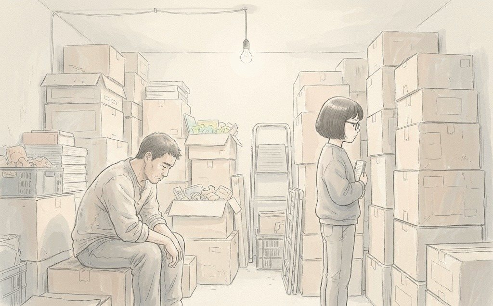
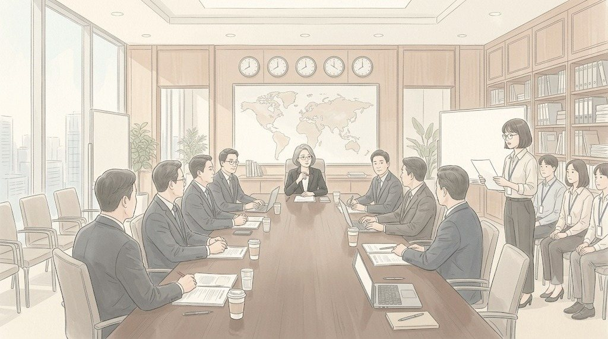

1995년 여름, 경기도 안산. 문방구 「윤아문구」.
간판에 딸 이름을 붙인 건 아버지 최병철의 고집이었다. 열한 살 최윤아는 그 간판이 부끄러웠다. 반 친구들은 그녀를 '문구'라고 불렀다.
가게는 학교 정문 앞에 있었다. 아침 8시면 아이들이 몰려와 준비물을 샀다. 공책, 색종이, 실내화. 최윤아는 계산대 뒤에서 아버지를 도왔다. 아버지는 장부를 쓰지 않았다.
"장사는 감이야. 애들 얼굴 보면 다음 주에 뭐 팔릴지 보여."
아버지의 감은 자주 맞았다. 다마고치가 유행하기 직전에 열 개를 들여놓아 사흘 만에 다 팔았다. 동네 사람들은 최 사장 눈이 귀신같다고 했다.
1997년 가을, 아버지의 감이 다시 말했다.
"이번 겨울엔 이게 터진다."
아버지는 일본에서 들어온 캐릭터 필통을 삼백 개 들였다. 빚을 냈다. 그해 겨울, 나라가 무너졌다. 텔레비전에서는 매일 공장이 문을 닫았다는 뉴스가 나왔다. 아이들은 새 필통 대신 작년 필통을 들고 학교에 왔다.
삼백 개 중에 마흔한 개가 팔렸다.
최윤아는 그 숫자를 정확히 기억했다. 남은 필통 상자를 창고에 쌓던 밤, 그녀는 공책 한 권을 꺼내 처음으로 장부를 썼다. 몇 개 들어왔고, 몇 개 팔렸고, 얼마가 남았는지. 아버지가 쓰지 않던 숫자들이었다.

숫자는 감보다 늦었다. 그러나 숫자는 거짓말을 하지 않았다.
이듬해 봄, 「윤아문구」의 간판이 내려갔다. 아버지는 간판을 떼던 날 딸에게 말했다.
"미안하다, 윤아야. 아빠가 감을 너무 믿었어."
최윤아는 대답하지 않았다. 대신 그 공책을 버리지 않았다.
2008년, 서울 을지로. 카드사 고객분석팀.
대학에서 통계를 전공한 최윤아는 카드사에 들어갔다. 첫 업무는 고객 이탈 분석이었다. 매달 카드를 해지하는 사람들이 어떤 패턴을 보이는지 찾는 일.
팀장 하준석은 감이 좋은 사람이었다.
"20대 여성은 포인트 혜택만 올리면 안 떠나. 내가 15년 해 봐서 알아."
최윤아는 데이터를 돌렸다. 20대 여성 이탈 고객의 70%는 포인트가 아니라 연회비 때문에 떠나고 있었다. 그녀는 그 결과를 보고서로 올렸다. 하준석은 보고서를 돌려보냈다.
"최윤아 씨, 데이터는 과거야. 우리는 미래를 보는 사람들이고."
포인트 혜택은 올라갔다. 이탈률은 그대로였다. 6개월 뒤, 연회비를 면제한 경쟁사로 20대 고객이 대거 빠져나갔다. 그 책임은 분석팀의 '예측 실패'로 정리되었다. 하준석은 다음 해 승진했다.
최윤아는 그날 밤 화장실에서 울었다. 슬퍼서가 아니었다. 1997년의 창고가 떠올라서였다.
2012년, 청연화장품 경력 입사. 고객관계관리 담당.
면접에서 당시 온라인 담당 상무가 물었다.
"최윤아 씨는 감이 좋은 편입니까, 데이터가 좋은 편입니까?"
"감은 숫자가 확인해 줄 때까지 의심하는 편입니다."
상무는 웃었다. 그리고 그녀를 뽑았다. 그 상무는 2년 뒤 회사를 떠났다. 그 뒤로 그녀를 그렇게 웃으며 뽑아 줄 사람은 없었다. 회의마다 그녀는 같은 말을 들었다. 최 과장은 너무 숫자만 본다고. 사람 마음은 엑셀에 안 나온다고.
그녀는 반박하지 않았다. 대신 반박할 수 없는 숫자를 가져왔다.
2021년 4월, 월요일 밤 10시. 청연타워 29층.
사무실에는 최윤아 혼자 남아 있었다. 모니터에는 수결 크림 상세페이지 전환율 그래프가 떠 있었다. 1.7배. 파트 전체가 기뻐했던 숫자.
그녀는 그 숫자를 믿지 않았다.
같은 주에 브랜드몰 전체 쿠폰 행사가 있었다. 15% 할인. 페이지를 바꾼 효과인지, 쿠폰 효과인지 섞여 있었다. 그녀는 데이터를 두 갈래로 나눴다. 쿠폰을 쓴 고객과 쓰지 않은 고객.
자정이 넘었다. 휴대폰이 울렸다. 남편 최정훈이었다. 세종 현장에서 퇴근한 시간.
"아직 회사야?"
"응. 숫자 하나만 확인하고."
"서아는 어머니가 재우셨대. 너 저녁은 먹었어?"
"먹었어."
먹지 않았다. 남편도 알았다. 그는 더 묻지 않았다. 대학 통계 학회에서 만난 사람이었다. 그녀가 숫자 앞에서 어떤 얼굴이 되는지 아는 유일한 사람.
"윤아야."
"응."
"너 또 그 공책 생각하지."
최윤아는 웃었다. 결혼 전, 그녀는 남편에게 「윤아문구」의 장부를 보여 준 적이 있었다. 그 공책은 지금도 집 책장 맨 위 칸에 있었다.
새벽 1시 20분. 결과가 나왔다.
쿠폰을 쓰지 않은 고객만 따로 봐도, 새 페이지의 전환율은 1.4배였다. 쿠폰이 0.3을 부풀렸지만, 페이지 효과는 진짜였다.
최윤아는 의자에 등을 기댔다. 처음으로 그 숫자를 믿어도 된다고 생각했다. 그녀는 보고서 한 장을 정리해 팀 공유 폴더에 올렸다. 제목은 짧았다.
'수결 페이지 효과 - 쿠폰 제외 시 1.4배. 진짜임.'
화요일 오전 8시 10분.
한지석이 그 파일을 열었다. 그는 한참 화면을 보다가 최윤아의 자리로 걸어왔다.
"윤아 과장. 이거 언제 했어요?"
"어젯밤에요."
"1.7배라고 다들 좋아했는데. 굳이 줄였네요."
최윤아는 모니터에서 눈을 떼지 않았다.
"1.7은 다음 달에 깨져요. 쿠폰이 끝나면요. 그때 사장님이 왜 떨어졌냐고 물으면, 우리는 대답 못 해요. 1.4는 안 깨져요."
한지석은 잠깐 말이 없었다. 그리고 고개를 끄덕였다.
"토요일 보고는 1.4로 갑시다."
옆자리에서 이우진이 그 대화를 듣고 있었다. 그는 최윤아가 왜 회의마다 '확실하지 않음'이라는 말을 붙이는지, 그날 처음으로 조금 알 것 같았다.
토요일 오전 7시 35분. 대회의실.
최윤아가 숫자를 보고했다. 1.4배. 쿠폰 효과를 뺀 숫자라는 설명을 덧붙였다.
문혜경은 빨간 볼펜을 들었다.
"1.7이라는 말을 들었는데요. 경영기획에서."
회의실의 몇 사람이 경영기획팀 쪽을 봤다. 성동민 차장이 서류를 뒤적였다. 최윤아가 답했다.
"1.7은 쿠폰 행사가 겹친 숫자입니다. 쿠폰이 끝나면 내려갑니다. 저희가 책임질 수 있는 숫자는 1.4입니다."
문혜경은 그녀를 오래 봤다.

"작은 숫자를 들고 오는 사람은 드물어요."
그리고 출력본에 동그라미를 하나 그렸다.
회의가 끝나고, 최윤아는 휴대폰을 꺼냈다. 안산에 사는 아버지에게 메시지를 보냈다. 일흔 살. 지금은 동네 아파트 경비실에서 일하는 사람.
답은 금방 왔다. 아버지는 여전히 문자를 느리게 쳤지만, 딸의 메시지에는 늘 빨랐다.
최윤아는 잠깐 생각하다가 답을 썼다.
(EP15 끝)